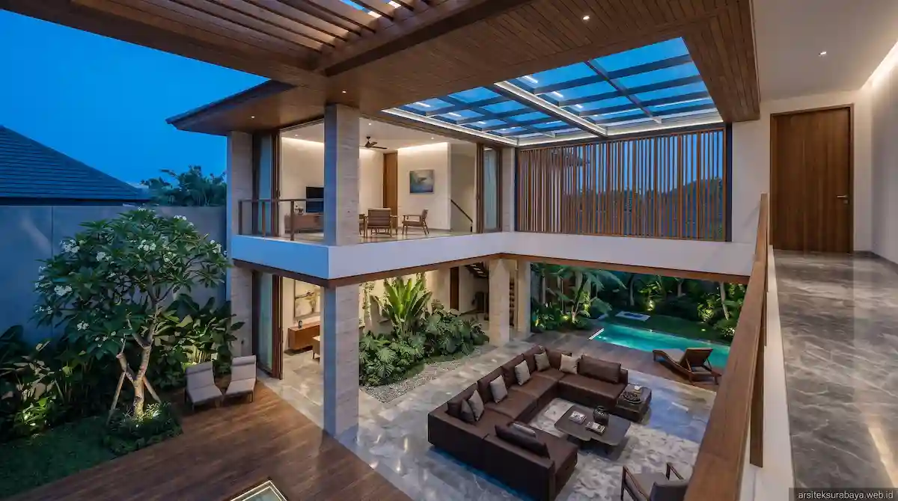

1. Fenomena Tren Hunian Resort Living di Surabaya
Surabaya sebagai pusat perekonomian dan perkotaan yang dinamis memiliki suhu udara harian yang tergolong hangat. Kesibukan aktivitas perkotaan yang tinggi membuat kebutuhan akan tempat tinggal tidak lagi sebatas ruang bernaung, melainkan berkembang menjadi sarana pemulihan energi (sanctuary). Tren rumah tropis mewah berkonsep resort living hadir memenuhi ekspektasi tersebut dengan menyajikan atmosfer liburan privat di dalam rumah sendiri.
Tim Arsitek Surabaya Studio merancang konsep ini dengan menggabungkan keindahan visual yang memukau, privasi maksimal, dan kepraktisan tata ruang. Dengan mengoptimalkan aliran angin dan menyaring radiasi matahari, rumah tropis mewah dapat mempertahankan suhu interior tetap sejuk alami, menciptakan suasana menenangkan sekaligus menghemat konsumsi energi listrik secara signifikan sepanjang tahun.
2. Wilayah Potensial Penggunaan Layanan Arsitek di Surabaya
Permintaan akan jasa perancangan rumah mewah berkonsep tropis resort terus mengalami peningkatan pesat di berbagai kawasan perumahan eksklusif di Kota Pahlawan. Layanan konsultasi digital melalui situs arsiteksurabaya.web.id mempermudah koordinasi bagi pemilik kaveling di wilayah-wilayah utama berikut:
- Surabaya Barat (Citraland, Graha Famili, Pakuwon Indah, Bukit Darmo Golf, & Wiyung): Kawasan hunian elit dengan kontur kaveling yang fleksibel. Sangat ideal untuk perancangan villa atau rumah tropis resort berukuran luas, dilengkapi kolam renang privat, inner courtyard, serta taman tropis berkanopi rindang.
- Surabaya Timur (San Antonio Pakuwon City, MERR, Sukolilo, & Dharmahusada): Koridor berkembang dengan minat tinggi pada hunian modern tropis. Penataan tata ruang pada kaveling hook maupun sudut terbatas disiasati dengan void vertikal dan kisi-kisi peneduh agar rumah tetap adhem.
- Surabaya Selatan (Gayungsari, Ketintang, & Jemursari): Area pemukiman hijau yang banyak melakukan peremajaan properti tua menjadi rumah tropis kontemporer yang kokoh, sehat, dan bebas risiko banjir.
- Surabaya Pusat (Gubeng & Tegalsari): Kawasan bernilai historis dan strategis yang membutuhkan sentuhan arsitektur tropis modern agar tampak elegan dan berwibawa di tengah lingkungan perkotaan.
3. Prinsip Utama Perancangan Rumah Tropis Mewah
Merancang hunian bernuansa resort tidak sekadar menempatkan kolam renang di halaman belakang, melainkan melibatkan rekayasa tata ruang yang menyeluruh. Beberapa prinsip penting yang menjadi standar kami antara lain:
- Tata Ruang Terbuka (Seamless Indoor-Outdoor Living): Penggunaan pintu kaca lipat berukuran besar yang menghubungkan ruang keluarga secara langsung dengan area teras outdoor dan kolam renang, menciptakan kesan ruang yang sangat lapang.
- Secondary Skin & Kisi-kisi Fasad: Pemasangan kisi-kisi kayu sintetis atau panel aluminium perforasi pada fasad terdepan untuk menghalau panas matahari barat tanpa mengorbankan sirkulasi angin.
- Atap Miring Teritisan Lebar: Melindungi dinding utama dari paparan terik matahari langsung serta terpaan hujan deras khas iklim tropis.

4. Menciptakan Mikroiklim Sejuk Melalui Lansekap & Elemen Air
Kehadiran elemen air seperti kolam renang (swimming pool) atau kolam refleksi (reflection pond) berfungsi sebagai pendingin alami mikroiklim lingkungan rumah. Angin yang melintas di atas permukaan air akan mengalami penurunan suhu sebelum masuk ke dalam ruang keluarga, menghasilkan hembusan udara yang terasa adhem dan menyegarkan.
Penataan tanaman tropis bernuansa hijau seperti pohon pule, kamboja fosil, monstera, serta vegetasi berdaun lebar lainnya ditempatkan pada titik strategis untuk membiaskan cahaya silau dan menyerap panas radiasi lingkungan sekitar.
5. Pemilihan Material Alam Premium Tahan Cuaca Surabaya
Agar bangunan tetap anggun dan bebas dari masalah perawatan berkala yang rumit, pemilihan bahan material exterior dan interior dipilih secara teliti berdasarkan daya tahannya:
- Batu Alam Travertine & Andesit: Memberikan tekstur kemewahan alami yang tahan terhadap perubahan cuaca ekstrem dan tidak licin saat terpapar air.
- Kusen Aluminium High-Grade & UPVC: Menjamin ketahanan terhadap muai-susut suhu panas serta bebas dari ancaman lapuk akibat kelembapan udara.
- Kayu Ulin atau Wood Plastic Composite (WPC): Sangat ideal digunakan untuk decking area kolam renang karena tahan air, tidak mudah melengkung, dan tahan rayap.
6. Layanan Perancangan Eksklusif Arsitek Surabaya Studio
Mewujudkan hunian berkelas di Kota Surabaya membutuhkan perencanaan yang matang dan presisi tinggi. Tim Arsitek Surabaya Studio menyediakan layanan pendampingan profesional menyeluruh untuk memastikan visi rumah impian Anda terwujud dengan sempurna.
Layanan kami mencakup konsultasi tata ruang, konsep visualisasi 3D photorealistic, penyusunan dokumen Detail Engineering Design (DED) lengkap, perhitungan Rencana Anggaran Biaya (RAB) yang transparan, hingga bantuan pengurusan dokumen legalitas Persetujuan Bangunan Gedung (PBG) wilayah Surabaya.
Kesimpulan
Memiliki rumah tropis mewah berkonsep resort living di Surabaya merupakan investasi jangka panjang terbaik untuk kenyamanan dan kualitas hidup keluarga Anda. Kombinasi sirkulasi udara alami yang adhem, tata cahaya terukur, serta estetika arsitektur yang menawan akan menjadikan rumah Anda tempat bernaung yang selalu dinantikan setiap hari.